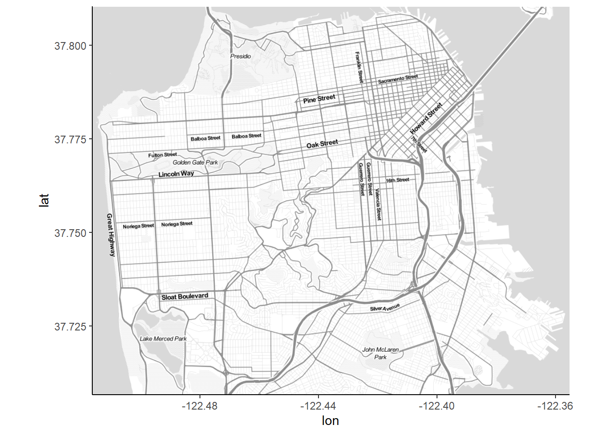

The dataset is San Francisco dataset, from 2018 to present. The description of each column is -
Incident Datetime - The date and time when the incident occurred
Incident Date - The date the incident occurred
Incident Time- The time the incident occurred
Incident Year - The year the incident occurred, provided as a convenience for filtering
Incident Day of Week - The day of week the incident occurred
Report Datetime - Distinct from Incident Datetime, Report Datetime is when the report was filed.
Row ID - A unique identifier for each row of data in the dataset
Incident ID - This is the system generated identifier for incident reports. Incident IDs and Incident Numbers both uniquely identify reports, but Incident Numbers are used when referencing cases and report documents.
Incident Number - The number issued on the report, sometimes interchangeably referred to as the Case Number. This number is used to reference cases and report documents.
CAD Number - The Computer Aided Dispatch (CAD) is the system used by the Department of Emergency Management (DEM) to dispatch officers and other public safety personnel. CAD Numbers are assigned by the DEM system and linked to relevant incident reports (Incident Number).
Report Type Code - A system code for report types, these have corresponding descriptions within the dataset.
Report Type Description - The description of the report type, can be one of: Initial; Initial Supplement; Vehicle Initial; Vehicle Supplement; Coplogic Initial; Coplogic Supplement
Filed Online - Non- emergency police reports can be filed online by members of the public using SFPD’s self-service reporting system called Coplogic Values in this field will be “TRUE” if Coplogic was used to file the report.
Incident Code - Incident Codes are the system codes to describe a type of incident. A single incident report can have one or more incident types associated. In those cases you will see multiple rows representing a unique combination of the Incident ID and Incident Code.
Incident Category - A category mapped on to the Incident Code used in statistics and reporting. Mappings provided by the Crime Analysis Unit of the Police Department.
Incident Subcategory - A subcategory mapped to the Incident Code that is used for statistics and reporting. Mappings are provided by the Crime Analysis Unit of the Police Department.
Incident Description - The description of the incident that corresponds with the Incident Code. These are generally self-explanatory.
Resolution - The resolution of the incident at the time of the report. Can be one of: • Cite or Arrest Adult • Cite or Arrest Juvenile* • Exceptional Adult • Exceptional Juvenile* • Open or Active • Unfounded Juvenile information not maintained in the dataset.
Intersection - The 2 or more street names that intersect closest to the original incident separated by a backward slash.
CNN - The unique identifier of the intersection for reference back to other related basemap datasets.
Police District - The Police District where the incident occurred. District boundaries can be reviewed in the link below.
Analysis Neighborhood - This field is used to identify the neighborhood where each incident occurs. Neighborhoods and boundaries are defined by the Department of Public Health and the Mayor’s Office of Housing and Community Development.
Supervisor District - There are 11 members elected to the Board of Supervisors in San Francisco, each representing a geographic district. The Board of Supervisors is the legislative body for San Francisco. The districts are numbered 1 through 11.
Latitude - The latitude coordinate in WGS84, spatial reference is EPSG:4326
Longitude - The longitude coordinate in WGS84, spatial reference is EPSG:4326
Point - Geolocation in OGC WKT format (e.g, POINT(37.4,-122.3)
As we can see that this dataset is large, with many fields.To perform some infer analysis and infer from the data, we will need to perform some cleaning, tidying and identify which of these fields can be beneficial to us.
As we can see that this dataset is large, with many fields.To perform some infer analysis and infer from the data, we will need to perform some cleaning, tidying and identify which of these fields can be beneficial to us.
###Dataset
Reading in the data
# Read data from the csv filedata <-read.csv("_data/SF_Incident_Reports__2018_to_Present.csv")
Error in file(file, "rt"): cannot open the connection
The dimensions of the data
dim(data)
NULL
The datatype of each column
str(data)
function (..., list = character(), package = NULL, lib.loc = NULL, verbose = getOption("verbose"),
envir = .GlobalEnv, overwrite = TRUE)
Now let us check how many null values are present in the dataset.
sum(is.na(data))
[1] 0
Let us check which columns have how many missing values.
missing_vals <-colSums(is.na(data))
Error in colSums(is.na(data)): 'x' must be an array of at least two dimensions
Error in seq_len(ncol(x)): argument must be coercible to non-negative integer
head(data)
1 function (..., list = character(), package = NULL, lib.loc = NULL,
2 verbose = getOption("verbose"), envir = .GlobalEnv, overwrite = TRUE)
3 {
4 fileExt <- function(x) {
5 db <- grepl("\\\\.[^.]+\\\\.(gz|bz2|xz)$", x)
6 ans <- sub(".*\\\\.", "", x)
Data Cleaning
The columns below have maximum of null values and wont be much benefical to us for analysis. Hence we can drop them. Civic.Center.Harm.Reduction.Project.Boundary HSOC.Zones.as.of.2018.06.05 Invest.In.Neighborhoods..IIN..Areas ESNCAG…Boundary.File Central.Market.Tenderloin.Boundary.Polygon…Updated Civic.Center.Harm.Reduction.Project.Boundary
Error in mutate(., Incident.Month = month(Incident.Datetime, label = T)): object 'mutated_data' not found
crime <- mutated_data
Error in eval(expr, envir, enclos): object 'mutated_data' not found
###QUESTIONS:
After observing the data, certain questions pop up in my mind.We can make observations about crime has increased over the years, how COVID has affected the crime rate, the district wise distribution of crime, what is the most frequent resolution in different districts,what are the top crimes and what time does it occur,what are the crime hotspots.
I will now go over these questions and try to plot interesting graphs so we can get some inference from it.
##Crime over the years:
#a)Distribution of crime over the years from 2018 - Present.
We can group by the Incident Year and plot the graph.
Error in ggplot(crime_per_year, aes(Year, Total)): object 'crime_per_year' not found
g +geom_bar(stat="identity", width =0.5, fill="blue") +labs(title="Crime in San Francisco", subtitle="2018-2022", caption=" Total crime over the years") +theme(axis.text.x =element_text(angle=65, vjust=0.6))
Error in eval(expr, envir, enclos): object 'g' not found
From this graph we can observe that the crime has reduced during COVID years of 2020-2021, which can be an indicator that either the crime had reduced due to lockdown conditions or the reported crime had reduced during those years. We can also observe the crime decreasing slightly from 2018 to Present day.
#b) Distribution of crime per category
We can create a dataframe, by grouping by on the basis of Incident Category and also calculate the percentage.
Error in ggplot(crime_category, aes(x = Category, y = Frequency, fill = Category)): object 'crime_category' not found
bp
Error in eval(expr, envir, enclos): object 'bp' not found
From the plot we can observe that count of Larceny Theft, is much much greater than the other categories.Disorderly conduct is the least frequent category.
#c) Time Series graph for Daily Crimes from 2018-2022
We can mutate the date and group by date, to get the number of crimes each day.
Error in mutate(., Date = as.Date(Incident.Date, "%Y/%m/%d")): object 'crime' not found
head(df_crime_daily)
Error in head(df_crime_daily): object 'df_crime_daily' not found
library(ggplot2)library(scales)plot <-ggplot(df_crime_daily, aes(x = Date, y = count)) +geom_line(color ="#F2CA27", size =0.1) +geom_smooth(color ="#1A1A1A") +# fte_theme() +scale_x_date(breaks =date_breaks("1 year"), labels =date_format("%Y")) +labs(x ="Date of Crime", y ="Number of Crimes", title ="Daily Crimes in San Francisco from 2018 – 2022")
Error in ggplot(df_crime_daily, aes(x = Date, y = count)): object 'df_crime_daily' not found
plot
function (x, y, ...)
UseMethod("plot")
<bytecode: 0x000001c4da6157b0>
<environment: namespace:base>
We can again oberve the dip during the COVID lockdown period, and in general observe around 300-500 crimes per day. With unual low as well as high spikes.
##Crime in District -wise
#a) District wise Crime Distribution
We can create a dataframe by grouping by the Police district.
Error in colnames(crime_per_district) <- c("Police.District", "Total"): object 'crime_per_district' not found
head(crime_per_district )
Error in head(crime_per_district): object 'crime_per_district' not found
g <-ggplot(crime_per_district, aes(Police.District, Total))
Error in ggplot(crime_per_district, aes(Police.District, Total)): object 'crime_per_district' not found
g +geom_bar(stat="identity", width =0.5, fill="pink") +labs(title="District-wise crime in San Francisco", subtitle="2018-2022", caption=" Total crime in each district") +theme(axis.text.x =element_text(angle=65, vjust=0.6))
Error in eval(expr, envir, enclos): object 'g' not found
From the graph, we can see Central having maximum number of crime and Out of SF is the least.Park can be said to be the safest district as it has the least amount of crime.
#b) Resolution rates in each district
g <-ggplot(crime, aes(Police.District))
Error in ggplot(crime, aes(Police.District)): object 'crime' not found
g +geom_bar(aes(fill=Resolution), width =0.5) +theme(axis.text.x =element_text(angle=65, vjust=0.6)) +labs(title="Resolution in each District", )
Error in eval(expr, envir, enclos): object 'g' not found
From this graph, we can observe that maximum number of cases in all the districts are open or active.Tenderloin has the most arrests and Park has the least. There are some unfounded resolutions in each District.
##Temporal Trends
#a) Hourly Crime Distribution
We can create a dataframe by grouping by Incident Hour.
Error in group_by(., Incident.Hour): object 'crime' not found
head(crime_perhours)
Error in head(crime_perhours): object 'crime_perhours' not found
ggplot(crime_perhours, aes(x = Incident.Hour, y = TotalCrime))+geom_col(fill ="orange")+theme_minimal()+labs(title ="Crime per hour, San Francisco 2018 - 2022",x ="Hours",y ="Total Crime" )
Error in ggplot(crime_perhours, aes(x = Incident.Hour, y = TotalCrime)): object 'crime_perhours' not found
We can observe that maximum crimes occur around 12 in the afternoon, then another spike at midnight. It then gradually decreases from 1 am - 7 am in the morning.
#b) Theft time Heatmap
Of the above hourly districution, let us focus on Larcent Theft and plot the heatmap.
Error in filter(., Incident.Category == "Larceny Theft"): object 'crime' not found
head(df_theft_time)
Error in head(df_theft_time): object 'df_theft_time' not found
plot <-ggplot(df_theft_time, aes(x = Incident.Hour, y = Incident.Day.of.Week, fill = count)) +geom_tile() +theme(axis.text.x =element_text(angle =90, vjust =0.6), legend.title =element_blank(), legend.position="top", legend.direction="horizontal", legend.key.width=unit(2, "cm"), legend.key.height=unit(0.25, "cm"), legend.margin=unit(-0.5,"cm"), panel.margin=element_blank()) +labs(x ="Hour of Theft (Local Time)", y ="Day of Week of Theft", title ="Number of Thefts in San Francisco from 2018 – 2022, by Time of Theft") +scale_fill_gradient(low ="white", high ="orange")
Error in ggplot(df_theft_time, aes(x = Incident.Hour, y = Incident.Day.of.Week, : object 'df_theft_time' not found
plot
function (x, y, ...)
UseMethod("plot")
<bytecode: 0x000001c4da6157b0>
<environment: namespace:base>
From this heatmap, we see a spike in crimes over the weekends in the midnight. We can also seespikes during weekdays around the evenig time from 5pm-8-pm.
##Crime hotspots
#a) Map of San Francisco
library(ggmap)sf =get_stamenmap(bbox =c(left =-122.5164, bottom =37.7066, right =-122.3554, top =37.8103), maptype =c("toner-lite"), zoom =13)map =ggmap(sf)map

#b) Plotting the first 500 random points on the map
map +geom_point(data =sample_n(crime, 500), aes(x = Longitude, y = Latitude))
Error in `geom_point()`:
! Problem while computing aesthetics.
ℹ Error occurred in the 4th layer.
Caused by error in `FUN()`:
! object 'Longitude' not found
We can already observe a clustering towards the city center.
#c) Density Plot
map +stat_density2d( data =sample_frac(crime, 0.2), aes(x = Longitude, y = Latitude, fill = ..level.., alpha = ..level..), size =1, bins =50, geom ='polygon') +scale_fill_gradient('Crime\nDensity', low ='blue', high ='orange') +scale_alpha(range =c(.2, .3), guide =FALSE) +guides(fill =guide_colorbar(barwidth =1.5, barheight =10))
Error in `stat_density2d()`:
! Problem while computing aesthetics.
ℹ Error occurred in the 4th layer.
Caused by error in `FUN()`:
! object 'Longitude' not found
We can observe certain intersections and having higher density and the maximum density being at the city center area.The parks and grassland regions have no reported crimes.
###Conclusion
Thus with the help of the SAN FRANCISCO crime dataset, we could plot thee graphs and gain some insight.
Source Code
---title: "San Francisco Crime Data Exploration"author: "Nikita Masanagi"desription: "Crime Analysis"data: "San Francisco Crime"date: "12/14/2022"format: html: toc: true code-fold: false code-copy: true code-tools: true---```{r}# Import important libraries needed for functionslibrary(tidyverse)library(rmarkdown)library(summarytools)library(dplyr)library(lubridate)knitr::opts_chunk$set(echo =TRUE, warning=FALSE, message=FALSE)```1) Dataset DescriptionThe dataset is San Francisco dataset, from 2018 to present. The description of each column is -Incident Datetime - The date and time when the incident occurredIncident Date - The date the incident occurredIncident Time- The time the incident occurredIncident Year - The year the incident occurred, provided as a convenience for filteringIncident Day of Week - The day of week the incident occurredReport Datetime - Distinct from Incident Datetime, Report Datetime is when the report was filed.Row ID - A unique identifier for each row of data in the datasetIncident ID - This is the system generated identifier for incident reports. Incident IDs and Incident Numbers both uniquely identify reports, but Incident Numbers are used when referencing cases and report documents.Incident Number - The number issued on the report, sometimes interchangeably referred to as the Case Number. This number is used to reference cases and report documents.CAD Number - The Computer Aided Dispatch (CAD) is the system used by the Department of Emergency Management (DEM) to dispatch officers and other public safety personnel. CAD Numbers are assigned by the DEM system and linked to relevant incident reports (Incident Number).Report Type Code - A system code for report types, these have corresponding descriptions within the dataset.Report Type Description - The description of the report type, can be one of: Initial; Initial Supplement; Vehicle Initial; Vehicle Supplement; Coplogic Initial; Coplogic SupplementFiled Online - Non- emergency police reports can be filed online by members of the public using SFPD’s self-service reporting system called Coplogic Values in this field will be “TRUE” if Coplogic was used to file the report.Incident Code - Incident Codes are the system codes to describe a type of incident. A single incident report can have one or more incident types associated. In those cases you will see multiple rows representing a unique combination of the Incident ID and Incident Code.Incident Category - A category mapped on to the Incident Code used in statistics and reporting. Mappings provided by the Crime Analysis Unit of the Police Department.Incident Subcategory - A subcategory mapped to the Incident Code that is used for statistics and reporting. Mappings are provided by the Crime Analysis Unit of the Police Department.Incident Description - The description of the incident that corresponds with the Incident Code. These are generally self-explanatory.Resolution - The resolution of the incident at the time of the report. Can be one of: • Cite or Arrest Adult • Cite or Arrest Juvenile* • Exceptional Adult • Exceptional Juvenile* • Open or Active • Unfounded Juvenile information not maintained in the dataset. Intersection - The 2 or more street names that intersect closest to the original incident separated by a backward slash.CNN - The unique identifier of the intersection for reference back to other related basemap datasets.Police District - The Police District where the incident occurred. District boundaries can be reviewed in the link below. Analysis Neighborhood - This field is used to identify the neighborhood where each incident occurs. Neighborhoods and boundaries are defined by the Department of Public Health and the Mayor's Office of Housing and Community Development. Supervisor District - There are 11 members elected to the Board of Supervisors in San Francisco, each representing a geographic district. The Board of Supervisors is the legislative body for San Francisco. The districts are numbered 1 through 11. Latitude - The latitude coordinate in WGS84, spatial reference is EPSG:4326Longitude - The longitude coordinate in WGS84, spatial reference is EPSG:4326Point - Geolocation in OGC WKT format (e.g, POINT(37.4,-122.3)As we can see that this dataset is large, with many fields.To perform some infer analysis and infer from the data, we will need to perform some cleaning, tidying and identify which of these fields can be beneficial to us.As we can see that this dataset is large, with many fields.To perform some infer analysis and infer from the data, we will need to perform some cleaning, tidying and identify which of these fields can be beneficial to us.###DatasetReading in the data```{r}# Read data from the csv filedata <-read.csv("_data/SF_Incident_Reports__2018_to_Present.csv")```The dimensions of the data```{r}dim(data)```The datatype of each column```{r}str(data)```Now let us check how many null values are present in the dataset.```{r}sum(is.na(data))```Let us check which columns have how many missing values.```{r}missing_vals <-colSums(is.na(data))missing_vals[sapply(missing_vals, function(x) any(x >0))]```As we can see, there are some columns with more than 5 lakh nulll values. We can handle that when we are cleaning the dataDataframe summary```{r}print(summarytools::dfSummary(data,varnumbers =FALSE,plain.ascii =FALSE, style ="grid", graph.magnif =0.70, valid.col =FALSE),method ='render',table.classes ='table-condensed')``````{r}head(data)```### Data CleaningThe columns below have maximum of null values and wont be much benefical to us for analysis. Hence we can drop them.Civic.Center.Harm.Reduction.Project.BoundaryHSOC.Zones.as.of.2018.06.05Invest.In.Neighborhoods..IIN..AreasESNCAG...Boundary.File Central.Market.Tenderloin.Boundary.Polygon...Updated Civic.Center.Harm.Reduction.Project.Boundary ```{r}cleaned_data <-select(data,-28,-29,-30,-31,-32,-33,-34)head(cleaned_data)```###Mutate dataWe can split the column Incident Time column into Minute and hour, so we can manipulate the hour column in further analysis.```{r}mutated_data <- cleaned_data %>%separate('Incident.Time',c('Incident.Hour','Incident.Minute'),sep =":")mutated_data <- mutated_data %>%mutate(Incident.Month =month(Incident.Datetime, label = T))``````{r}crime <- mutated_data```###QUESTIONS:After observing the data, certain questions pop up in my mind.We can make observations about crime has increased over the years, how COVID has affected the crime rate, the district wise distribution of crime, what is the most frequent resolution in different districts,what are the top crimes and what time does it occur,what are the crime hotspots.I will now go over these questions and try to plot interesting graphs so we can get some inference from it.##Crime over the years: #a)Distribution of crime over the years from 2018 - Present.We can group by the Incident Year and plot the graph.```{r}crime_per_year <- crime %>%group_by(Incident.Year) %>%summarise(total =n())colnames(crime_per_year) <-c("Year","Total") ``````{r}library(ggplot2)theme_set(theme_classic())# Plotg <-ggplot(crime_per_year, aes(Year, Total))g +geom_bar(stat="identity", width =0.5, fill="blue") +labs(title="Crime in San Francisco", subtitle="2018-2022", caption=" Total crime over the years") +theme(axis.text.x =element_text(angle=65, vjust=0.6))```From this graph we can observe that the crime has reduced during COVID years of 2020-2021, which can be an indicator that either the crime had reduced due to lockdown conditions or the reported crime had reduced during those years.We can also observe the crime decreasing slightly from 2018 to Present day.#b) Distribution of crime per categoryWe can create a dataframe, by grouping by on the basis of Incident Category and also calculate the percentage.```{r}crime_category <-sort(table(crime$Incident.Category),decreasing =TRUE)crime_category <-data.frame(crime_category[crime_category>10000])colnames(crime_category) <-c("Category", "Frequency")crime_category$Percentage <- crime_category$Frequency /sum(crime_category$Frequency)``````{r}crime_category``````{r}library(ggplot2)library(ggrepel)bp<-ggplot(crime_category, aes(x=Category, y=Frequency, fill=Category)) +geom_bar(stat="identity") +theme(axis.text.x=element_blank()) +geom_text_repel(data=crime_category, aes(label=Category))bp```From the plot we can observe that count of Larceny Theft, is much much greater than the other categories.Disorderly conduct is the least frequent category.#c) Time Series graph for Daily Crimes from 2018-2022We can mutate the date and group by date, to get the number of crimes each day.```{r}library(dplyr)df_crime_daily <- crime %>%mutate(Date =as.Date(Incident.Date, "%Y/%m/%d")) %>%group_by(Date) %>%summarize(count =n()) %>%arrange(Date)head(df_crime_daily)``````{r}library(ggplot2)library(scales)plot <-ggplot(df_crime_daily, aes(x = Date, y = count)) +geom_line(color ="#F2CA27", size =0.1) +geom_smooth(color ="#1A1A1A") +# fte_theme() +scale_x_date(breaks =date_breaks("1 year"), labels =date_format("%Y")) +labs(x ="Date of Crime", y ="Number of Crimes", title ="Daily Crimes in San Francisco from 2018 – 2022")plot```We can again oberve the dip during the COVID lockdown period, and in general observe around 300-500 crimes per day. With unual low as well as high spikes.##Crime in District -wise #a) District wise Crime DistributionWe can create a dataframe by grouping by the Police district.```{r}crime_per_district <- crime %>%group_by(Police.District) %>%summarise(n =n())colnames(crime_per_district) <-c("Police.District", "Total")head(crime_per_district )``````{r}g <-ggplot(crime_per_district, aes(Police.District, Total))g +geom_bar(stat="identity", width =0.5, fill="pink") +labs(title="District-wise crime in San Francisco", subtitle="2018-2022", caption=" Total crime in each district") +theme(axis.text.x =element_text(angle=65, vjust=0.6))```From the graph, we can see Central having maximum number of crime and Out of SF is the least.Park can be said to be the safest district as it has the least amount of crime.#b) Resolution rates in each district```{r}g <-ggplot(crime, aes(Police.District))g +geom_bar(aes(fill=Resolution), width =0.5) +theme(axis.text.x =element_text(angle=65, vjust=0.6)) +labs(title="Resolution in each District", )```From this graph, we can observe that maximum number of cases in all the districts are open or active.Tenderloin has the most arrests and Park has the least.There are some unfounded resolutions in each District.##Temporal Trends#a) Hourly Crime DistributionWe can create a dataframe by grouping by Incident Hour.```{r}crime_perhours <- crime %>%group_by(Incident.Hour) %>%summarise(TotalCrime =n())head(crime_perhours)``````{r}ggplot(crime_perhours, aes(x = Incident.Hour, y = TotalCrime))+geom_col(fill ="orange")+theme_minimal()+labs(title ="Crime per hour, San Francisco 2018 - 2022",x ="Hours",y ="Total Crime" )```We can observe that maximum crimes occur around 12 in the afternoon, then another spike at midnight. It then gradually decreases from 1 am - 7 am in the morning.#b) Theft time HeatmapOf the above hourly districution, let us focus on Larcent Theft and plot the heatmap.```{r}df_theft_time <- crime %>%filter(Incident.Category=="Larceny Theft")%>%group_by(Incident.Day.of.Week, Incident.Hour) %>%summarize(count =n())head(df_theft_time)``````{r}plot <-ggplot(df_theft_time, aes(x = Incident.Hour, y = Incident.Day.of.Week, fill = count)) +geom_tile() +theme(axis.text.x =element_text(angle =90, vjust =0.6), legend.title =element_blank(), legend.position="top", legend.direction="horizontal", legend.key.width=unit(2, "cm"), legend.key.height=unit(0.25, "cm"), legend.margin=unit(-0.5,"cm"), panel.margin=element_blank()) +labs(x ="Hour of Theft (Local Time)", y ="Day of Week of Theft", title ="Number of Thefts in San Francisco from 2018 – 2022, by Time of Theft") +scale_fill_gradient(low ="white", high ="orange")plot```From this heatmap, we see a spike in crimes over the weekends in the midnight. We can also seespikes during weekdays around the evenig time from 5pm-8-pm.##Crime hotspots#a) Map of San Francisco```{r}library(ggmap)sf =get_stamenmap(bbox =c(left =-122.5164, bottom =37.7066, right =-122.3554, top =37.8103), maptype =c("toner-lite"), zoom =13)map =ggmap(sf)map```#b) Plotting the first 500 random points on the map```{r}map +geom_point(data =sample_n(crime, 500), aes(x = Longitude, y = Latitude))```We can already observe a clustering towards the city center.#c) Density Plot```{r}map +stat_density2d( data =sample_frac(crime, 0.2), aes(x = Longitude, y = Latitude, fill = ..level.., alpha = ..level..), size =1, bins =50, geom ='polygon') +scale_fill_gradient('Crime\nDensity', low ='blue', high ='orange') +scale_alpha(range =c(.2, .3), guide =FALSE) +guides(fill =guide_colorbar(barwidth =1.5, barheight =10))```We can observe certain intersections and having higher density and the maximum density being at the city center area.The parks and grassland regions have no reported crimes.###ConclusionThus with the help of the SAN FRANCISCO crime dataset, we could plot thee graphs and gain some insight.